Project Overview
Cisco Packet Tracer · College Project
Campus Network — Cisco Packet Tracer
A five-module build of a scalable campus network: LAN foundations, VLSM addressing and static routing, RIP, single- and multi-area OSPF, and a WAN edge with NAT, EIGRP and BGP. Each module documents the objective, topology, configuration and verification of the actual Packet Tracer experiment.
Project modules
5
Packet Tracer files
6
Routing protocols covered
4
Modules documented
5 / 5
Module Progress
5 / 5 modules documentedLearning path
Network Modules
Full build
Campus Network — End-to-End Architecture
Across the five modules, one campus LAN (Module 1) grows into a multi-block, multi-protocol network: VLSM-subnetted blocks with static routing (Module 2), RIP-routed segments (Module 3), single- and multi-area OSPF (Module 4), and a WAN edge to an external network using NAT, EIGRP and BGP (Module 5).
Conceptual module sequence — not the actual Packet Tracer topology. Module 1's real topology is documented on the Module 1 page.
Module 1
Campus Network Foundation
Build a small campus LAN representing one building/block of the campus network, using a router, two switches, four PCs and a server.
Overview
Module 1 lays the foundation for the campus network project. It introduces the Cisco Packet Tracer environment, basic networking commands, device cabling, and the construction of a small local area network (LAN) that will represent one block of the wider campus.
The module covers a peer-to-peer style LAN built from an extended-star topology, router interface configuration, password/security setup on the router, and verification of connectivity between end devices.
Objective
Build a small campus LAN representing one building/block of the campus network.
This is achieved using 1 Cisco 2911 router, 2 Cisco 2960 switches, 4 PCs and 1 server, connected in an extended-star topology, with the router providing the Layer 3 gateway for the LAN.
Concepts
Topology
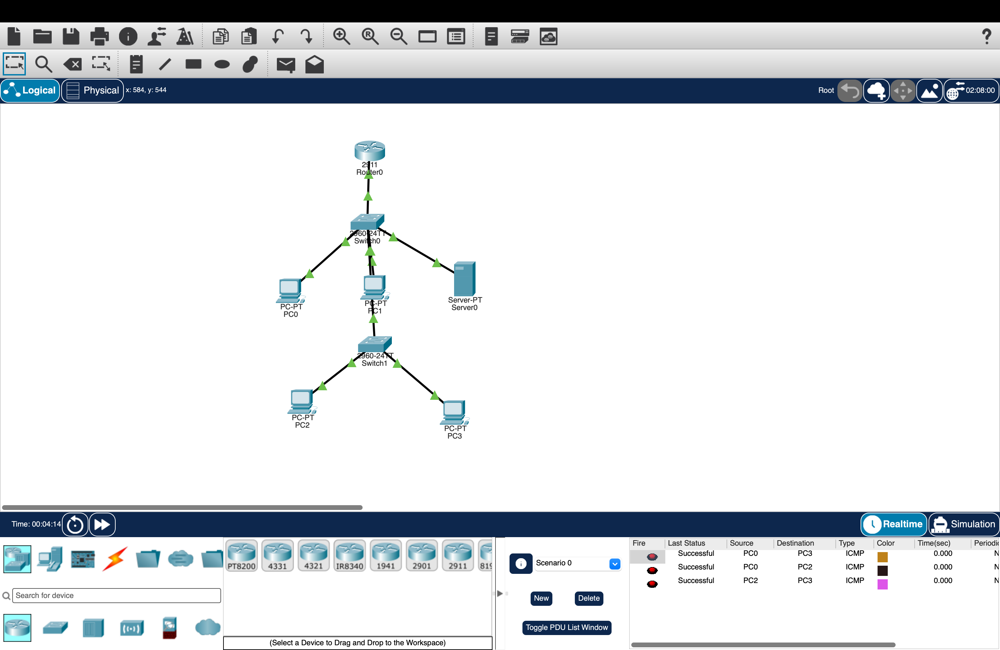
Click to zoomFig. 1 — Actual Module 1 topology captured from Cisco Packet Tracer: Router0, Switch0, Switch1, PC0, PC1, PC2, PC3, Server0.
Role of each device in the LAN:
- Router0 — acts as the Layer 3 gateway for the LAN, routing traffic in and out of the block.
- Switch0 / Switch1 — connect end devices within the LAN and forward Ethernet frames at Layer 2.
- PC0–PC3 — represent end-user devices in the campus network.
- Server0 — represents a server connected to the campus LAN.
The LAN follows an extended-star structure: Router0 connects to Switch0, Switch0 connects out to PC0, Server0, and to Switch1, and Switch1 connects to PC2 and PC3. Typical communication paths are:
- PC → Switch → Router (device reaching the gateway)
- PC → Switch → Switch → PC (device on one switch reaching a device on the other)
Devices & Connections
Device inventory
| Device | Type | Quantity | Role |
|---|---|---|---|
| Router0 | Cisco 2911 Router | 1 | LAN gateway / Layer 3 routing |
| Switch0, Switch1 | Cisco 2960 Switch | 2 | Layer 2 frame forwarding for end devices |
| PC0–PC3 | PC | 4 | End-user devices |
| Server0 | Server | 1 | Network server for the campus LAN |
Connections (as documented)
| From | To | Cable |
|---|---|---|
| Router G0/0 | Switch1 F0/1 | Copper Straight-Through |
| Switch1 F0/2 | PC1 | Copper Straight-Through |
| Switch1 F0/3 | PC2 | Copper Straight-Through |
| Switch1 F0/4 | Server | Copper Straight-Through |
| Switch1 F0/5 | Switch2 F0/1 | Copper Straight-Through |
| Switch2 F0/2 | PC3 | Copper Straight-Through |
| Switch2 F0/3 | PC4 | Copper Straight-Through |
Connection labels reproduced exactly as documented in the lab material (Switch1/Switch2, PC1–PC4 naming as given). These map to Switch0/Switch1 and PC0–PC3/Server0 as shown in the actual topology screenshot above.
Addressing
| Device | IP Address | Subnet Mask | Default Gateway |
|---|---|---|---|
| Router | 192.168.10.1 | 255.255.255.0 | — |
| PC1 | 192.168.10.10 | 255.255.255.0 | 192.168.10.1 |
| PC2 | 192.168.10.11 | 255.255.255.0 | 192.168.10.1 |
| PC3 | 192.168.10.12 | 255.255.255.0 | 192.168.10.1 |
| PC4 | 192.168.10.13 | 255.255.255.0 | 192.168.10.1 |
| Server | 192.168.10.100 | 255.255.255.0 | 192.168.10.1 |
End device configuration — evidence
PC IP Configuration
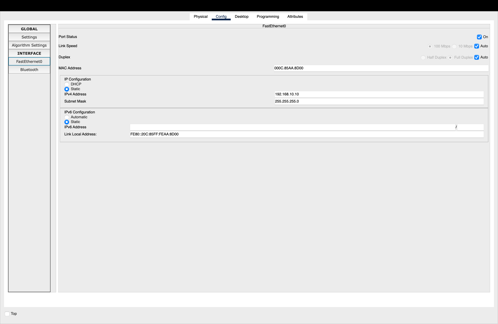
Shows a PC configured with its IP address, subnet mask and default gateway matching the addressing table above.
Server IP Configuration
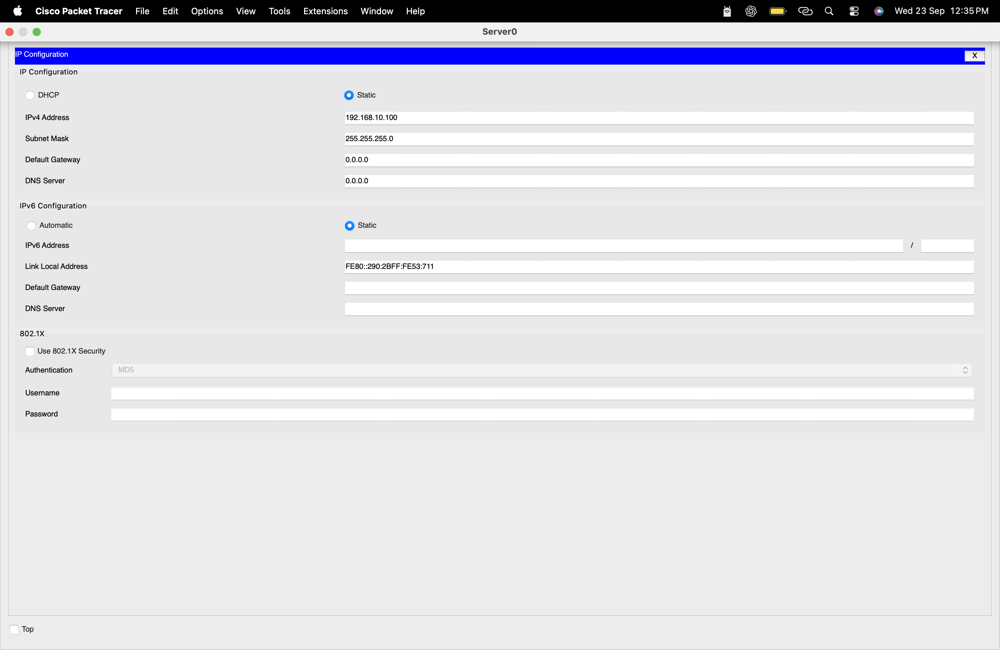
Shows Server0 configured with its static IP address, subnet mask and default gateway.
Configuration
Password / Security — evidence
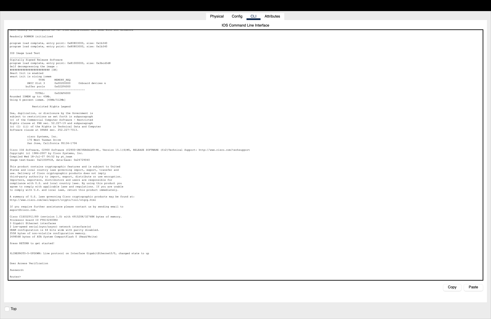
The router console shows User Access Verification and a Password: prompt before reaching the Router> command line. This confirms the router requires password authentication before any CLI access is granted, matching the line console 0 / line vty 0 4 password configuration.
Networking Commands
Command reference only — no screenshot of this output has been provided, so no terminal output is shown here.
Experiment Video
Module 1 — Experiment Walkthrough. A recorded run-through of the Packet Tracer experiment: building the topology, cabling the devices, configuring the router, and verifying connectivity.
Screenshots
Packet Tracer File
module1.pkt
Packet Tracer file for the Module 1 Campus Network Foundation experiment.
Verification
Interface Verification — show ip interface brief
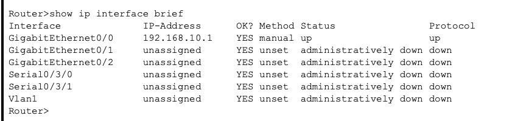
show ip interface brief lists each interface name, its IP address, and its Status/Protocol columns. A status of up / up means the interface is administratively enabled and the Layer 1/Layer 2 link is active — the interface is ready to pass traffic. Exact values are as shown in the screenshot; no output is invented beyond what is visible there.
Connectivity Verification
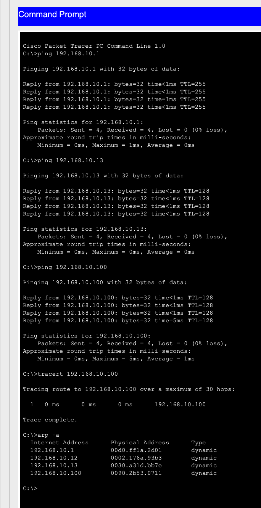
Documented checks: ping 192.168.10.1, ping 192.168.10.13, ping 192.168.10.100. Ping sends ICMP echo requests and waits for echo replies, verifying that a path exists and that the destination is reachable at the IP layer. Results shown are exactly what appears in the screenshot above.
Result
Module 1 established a basic campus LAN using a router, two switches, four PCs and a server. IP addressing, router interface configuration, password protection and basic connectivity were demonstrated and verified.
Module 2
VLSM + Static & Default Routing
Subnet a single campus block with VLSM to fit three department networks exactly, then connect every block with static routes.
Overview
Module 2 takes one starting block, 192.168.50.0/24, and divides it using Variable Length Subnet Masking (VLSM) so each department network is sized to what it actually needs instead of every subnet being the same size.
Three department blocks — Administration, Computer Science and Library — are carved out at different prefix lengths, and two point-to-point links between the routers are carved out as /30 networks. Static routes (and a default route where appropriate) are then used to give every block full reachability to the others.
Objective
Subnet 192.168.50.0/24 with VLSM to fit the Administration, Computer Science and Library networks, then achieve end-to-end reachability between all three blocks using static and default routing.
Concepts / Technologies
What is VLSM?
Variable Length Subnet Masking — subnetting the same network into blocks of different sizes, so each subnet is only as large as the number of hosts it actually needs.
Why not just use one fixed subnet size?
A single fixed size either wastes addresses on small networks or is too small for large ones. VLSM lets a /26, /27 and /28 come from the same /24 without overlap.
What does /26, /27, /28 mean?
The prefix length is the number of network bits in the mask. A /26 gives 64 addresses, a /27 gives 32, and a /28 gives 16 — each smaller prefix halves the block size.
What is a static route?
A manually configured route, entered with the ip route command, that tells a router how to reach a specific remote network through a given next-hop.
What is a default route?
A static route for 0.0.0.0 0.0.0.0 that a router uses when no more specific route matches — it sends unmatched traffic toward a single next-hop, typically the WAN or edge.
How is a static route written?
ip route <destination-network> <subnet-mask> <next-hop> — it tells the router that traffic for that network should be forwarded to the next-hop address given.
Topology
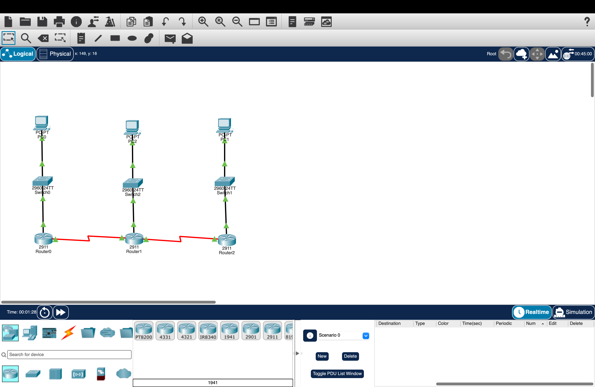
Fig. 1 — Module 2 — actual Packet Tracer topology showing the three department blocks connected through R1, R2 and R3.
Role of each device:
- R1, R2, R3 — three routers connecting the campus blocks and carrying the static routes between them.
- Administration, Computer Science, Library — three department LANs, each subnetted to its own VLSM block.
- PC0, PC1, PC2 — representative end devices, one per department block, used to verify reachability.
The R1–R2 and R2–R3 links are dedicated /30 point-to-point networks between the routers. Static routes on each router point toward the remote department blocks through the appropriate router link.
Devices & Addressing
VLSM allocation
| Purpose | Network | Prefix | Usable hosts |
|---|---|---|---|
| Administration | 192.168.50.0 | /26 | 62 |
| Computer Science | 192.168.50.64 | /27 | 30 |
| Library | 192.168.50.96 | /28 | 14 |
| R1–R2 link | 192.168.50.112 | /30 | 2 |
| R2–R3 link | 192.168.50.116 | /30 | 2 |
End-device addressing
| Device | IP Address | Subnet Mask |
|---|---|---|
| PC0 (Administration) | 192.168.50.2 | 255.255.255.192 |
| PC1 (Computer Science) | 192.168.50.66 | 255.255.255.224 |
| PC2 (Library) | 192.168.50.98 | 255.255.255.240 |
Configuration
There is no routing-configuration screenshot for this module — the static routes below are shown as documented configuration, not as evidence captured from the running router.
The corresponding static routes on the other routers follow the same pattern documented in the source material — each router is given a route to the remote blocks it does not directly connect to, through the correct router-to-router next-hop. Exact additional route lines beyond the two above were not included in the supplied evidence, so they are not reproduced here to avoid inventing CLI that was not documented.
Verification Commands
Experiment Video
Module 2 — Experiment Walkthrough. Subnetting the 192.168.50.0/24 block with VLSM, addressing each department block, and configuring the static routes between routers.
Screenshots
Verification
Routing Table — show ip route
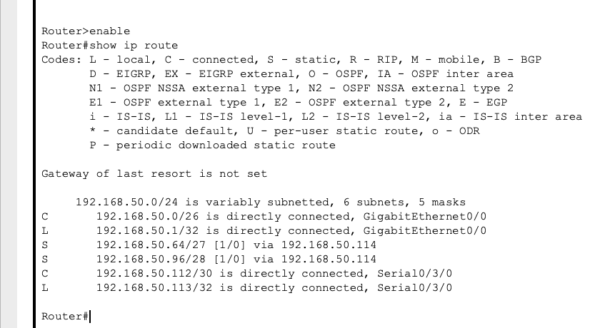
The routing table shows the static (S) routes to the Computer Science and Library blocks alongside the directly connected networks. Exact entries are as shown in the screenshot; nothing here is invented beyond it.
Connectivity Verification
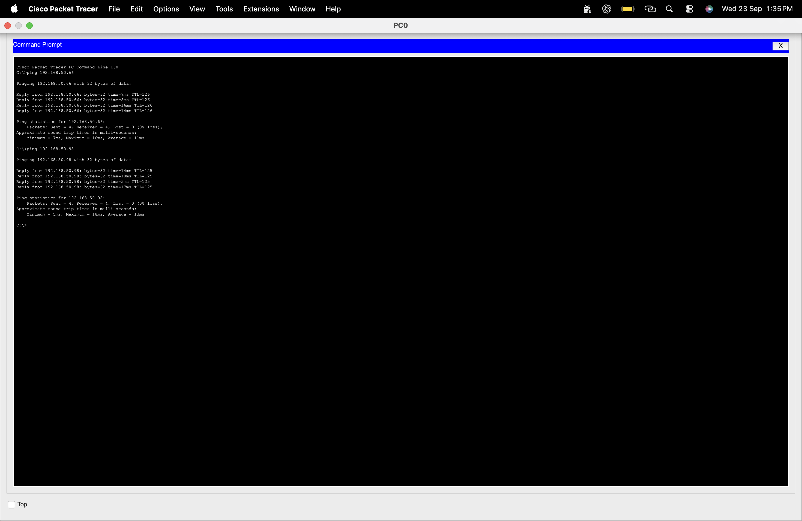
Documented checks: ping 192.168.50.66 and ping 192.168.50.98 from the Administration block, confirming the static routes provide working end-to-end reachability.
Packet Tracer File
module2.pkt
Packet Tracer file for the Module 2 VLSM and static/default routing experiment.
Result
Module 2 subnetted a single /24 block into three right-sized department networks using VLSM — a /26 for Administration, a /27 for Computer Science and a /28 for Library — and connected them across three routers using static routes, verified with successful pings between blocks.
Module 3
RIP Version 1 and RIP Version 2
Route dynamically across three routers using distance-vector RIP, and compare classful RIPv1 with classless RIPv2.
Overview
Module 3 replaces manual static routes with a dynamic distance-vector protocol: RIP. The same three-router chain is first routed with RIP version 1, then reconfigured with RIP version 2 to compare behaviour.
The key contrast is that RIPv1 is classful and always auto-summarizes at network boundaries, while RIPv2 is classless and supports disabling auto-summary with no auto-summary, allowing it to carry subnet mask information properly.
Objective
Configure RIP version 1 across R1–R2–R3, verify routing, then migrate the same topology to RIP version 2 with auto-summary disabled, and confirm connectivity between LAN-A and LAN-C in both cases.
Concepts / Technologies
What is RIP?
Routing Information Protocol — a distance-vector routing protocol that chooses paths based on hop count, with a maximum of 15 hops.
What is a distance-vector protocol?
A routing protocol where each router shares its whole routing table with directly connected neighbours, and picks the path with the lowest metric (hop count for RIP).
RIPv1 vs RIPv2 — what changed?
RIPv1 is classful and does not carry subnet mask information, so it always auto-summarizes at classful network boundaries. RIPv2 is classless, carries the subnet mask with each route, and supports VLSM.
What does “no auto-summary” do?
Disables automatic summarization of routes at classful network boundaries in RIPv2, so specific subnetted routes are advertised instead of being collapsed into one summary route.
Topology
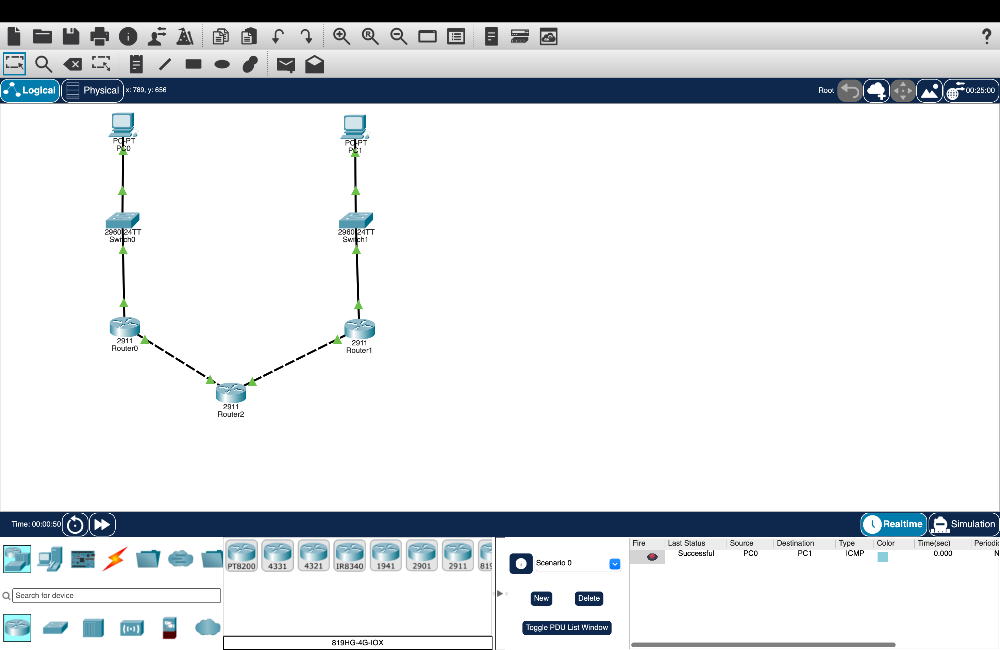
Fig. 1 — Module 3 — actual Packet Tracer topology: LAN-A, R1, R2, R3 and LAN-C connected in a chain.
Role of each device:
- R1 — connects LAN-A to the R1–R2 link.
- R2 — the middle router, connecting the R1–R2 and R2–R3 links.
- R3 — connects the R2–R3 link to LAN-C.
LAN-A and LAN-C sit at opposite ends of the chain, so traffic between them must be routed dynamically across both point-to-point links.
Devices & Addressing
Network addressing
| Segment | Network |
|---|---|
| LAN-A | 192.168.10.0/24 |
| R1–R2 link | 10.0.0.0/30 |
| R2–R3 link | 10.0.0.4/30 |
| LAN-C | 192.168.20.0/24 |
Configuration
Verification Commands
Experiment Video
Module 3 — Experiment Walkthrough. Configuring RIPv1, verifying it, then migrating to RIPv2 with auto-summary disabled.
Screenshots
Verification
RIP v1 Verification — show ip route / show ip protocols
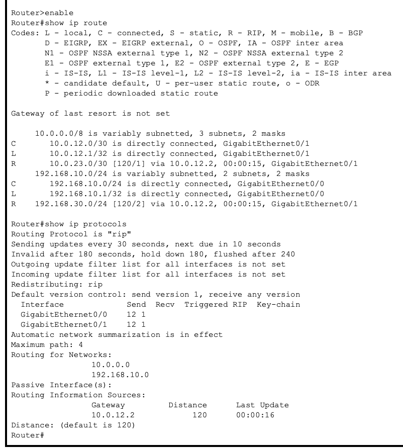
Confirms RIP version 1 is active and that R-learned routes to the remote LAN are present, exactly as captured in the screenshot.
RIP v2 Verification — show ip route / show ip protocols
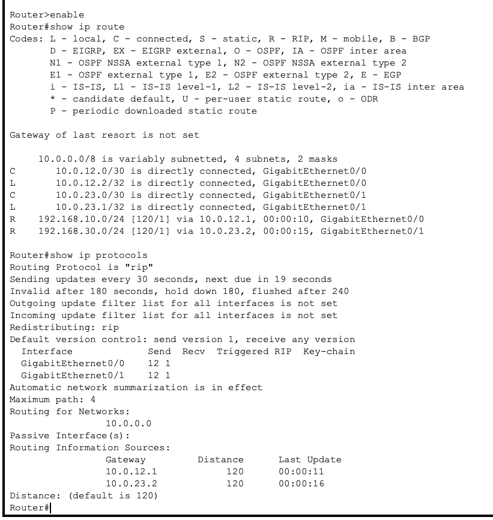
Confirms the router is running RIP version 2 with auto-summary disabled, and that subnetted routes are visible individually rather than summarized.
Connectivity Verification
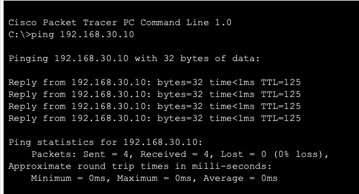
Documented checks: ping 192.168.20.10 and traceroute 192.168.20.10, confirming RIP successfully routes between the two LANs.
Packet Tracer File
module3.pkt
Packet Tracer file for the Module 3 RIPv1 / RIPv2 experiment.
Result
Module 3 routed LAN-A to LAN-C dynamically across a three-router chain using RIP, first with classful RIPv1 and then with classless RIPv2 with auto-summary disabled, with connectivity verified under both versions.
Module 4A
Single-Area OSPF
Implement OSPF Area 0 across a three-router campus, replacing distance-vector routing with a link-state protocol.
Overview
Module 4A implements Open Shortest Path First (OSPF) across three routers, each contributing one LAN, all placed in a single area — Area 0, the OSPF backbone.
Unlike RIP, OSPF is a link-state protocol: routers form neighbour adjacencies, exchange link-state information, and each independently calculates the shortest path using Dijkstra's algorithm rather than counting hops.
Objective
Implement OSPF Area 0 for a small campus of three routers and three LANs, form OSPF neighbour adjacencies across every router link, and verify full reachability between all three LANs.
Concepts / Technologies
What is OSPF?
Open Shortest Path First — a link-state routing protocol that builds a full map of the network topology and calculates the shortest path to each destination.
What is a router-id?
A 32-bit value, usually written like an IP address, that uniquely identifies a router within an OSPF domain.
What is Area 0?
The OSPF backbone area. In a single-area design, every router and network belongs to Area 0.
What does the wildcard mask in the network command mean?
OSPF's network command uses a wildcard (inverse) mask, not a subnet mask — 0.0.0.255 matches any host bits, mirroring a /24 network.
What is an OSPF neighbour adjacency?
A relationship formed between two directly connected OSPF routers after they exchange Hello packets and agree on parameters, allowing them to exchange link-state information.
Topology
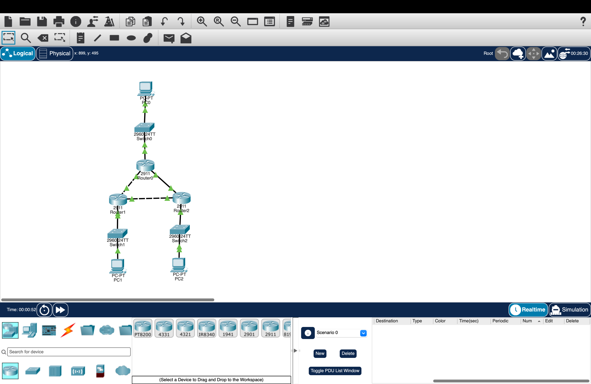
Fig. 1 — Module 4A — actual Packet Tracer topology: R1, R2, R3 fully meshed, each with its own LAN, all in Area 0.
Role of each device:
- R1 — router-id 1.1.1.1, connects LAN1 (192.168.10.0/24) into Area 0.
- R2 — router-id 2.2.2.2, connects LAN2 (192.168.20.0/24) into Area 0.
- R3 — router-id 3.3.3.3, connects LAN3 (192.168.30.0/24) into Area 0.
R1, R2 and R3 are interconnected by three /30 point-to-point links, all part of Area 0, giving every router a direct OSPF adjacency with the other two.
Devices & Addressing
Network addressing
| Segment | Network |
|---|---|
| LAN1 | 192.168.10.0/24 |
| LAN2 | 192.168.20.0/24 |
| LAN3 | 192.168.30.0/24 |
| R1–R2 link | 10.0.0.0/30 |
| R1–R3 link | 10.0.0.4/30 |
| R2–R3 link | 10.0.0.8/30 |
Configuration
Verification Commands
Experiment Video
Module 4A — Experiment Walkthrough. Configuring OSPF Area 0 on R1, R2 and R3, and verifying neighbour adjacencies and connectivity.
Screenshots
Verification
R1 — OSPF Neighbor Verification — show ip ospf neighbor
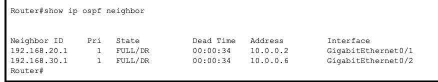
Note: this screenshot shows the output of show ip ospf neighbor on R1 — it is a neighbor-verification capture, not a configuration screenshot, and is labelled accordingly here.
R2 — OSPF Neighbor Verification — show ip ospf neighbor
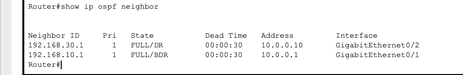
Shows R2’s adjacencies with R1 and R3, confirming OSPF has converged across both of R2’s router links.
R3 — OSPF Neighbor Verification — show ip ospf neighbor
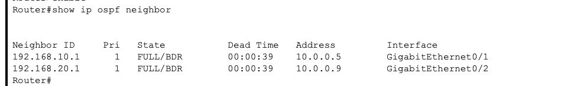
Shows R3’s adjacencies with R1 and R2, completing the full mesh of OSPF neighbour relationships.
Routing Table — show ip route
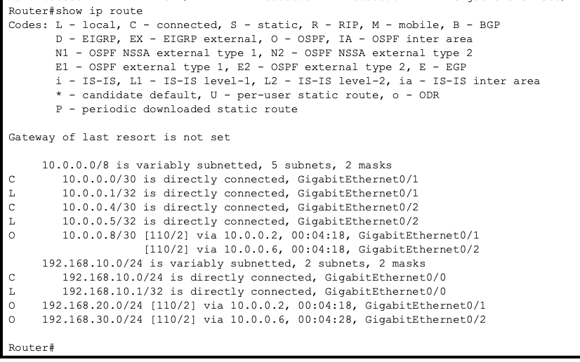
OSPF (O) routes to LAN2 and LAN3 appear alongside the directly connected LAN1, exactly as shown in the capture.
Connectivity Verification
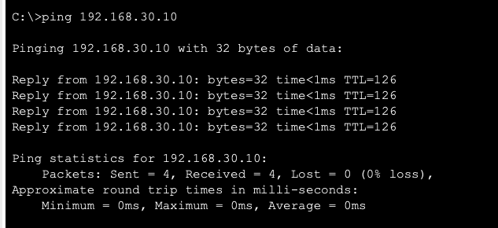
Documented check: ping 192.168.30.10, confirming OSPF successfully routes traffic to LAN3.
Packet Tracer File
module4a.pkt
Packet Tracer file for the Module 4A single-area OSPF experiment.
Result
Module 4A brought up OSPF Area 0 across R1, R2 and R3, with full neighbour adjacencies confirmed on every router link and end-to-end reachability verified between all three LANs.
Module 4B
Multi-Area OSPF
Extend single-area OSPF into three areas — Area 1, the Area 0 backbone, and Area 2 — connected through two ABRs.
Overview
Module 4B extends the single-area design of Module 4A into a multi-area OSPF network. Instead of one flat Area 0, the topology is split into Area 1, the Area 0 backbone, and Area 2, connected in a line: R1 — R2 — R3 — R4.
R2 and R3 act as Area Border Routers (ABRs), each with one interface in Area 0 and one interface in a non-backbone area, connecting Area 1 and Area 2 to the backbone.
Objective
Extend OSPF into a multi-area design — Area 1 (R1, LAN-A) → Area 0 backbone (R2 – R3) → Area 2 (R4, LAN-D) — with R2 and R3 as ABRs, and verify reachability from LAN-A to LAN-D across all three areas.
Concepts / Technologies
Why use multiple OSPF areas?
Splitting a large OSPF domain into areas limits how far link-state changes propagate, reducing SPF recalculation load and keeping routing tables smaller in each area.
What is the backbone area?
Area 0 — every other area in an OSPF design must connect to it, directly or through a virtual link, so that inter-area traffic always passes through the backbone.
What is an ABR?
Area Border Router — a router with interfaces in two or more OSPF areas, one of which must be Area 0. It summarizes and passes routing information between areas.
How does traffic get from Area 1 to Area 2?
It must cross the backbone: Area 1 → Area 0 → Area 2, entering and leaving the backbone through the two ABRs, R2 and R3.
Topology
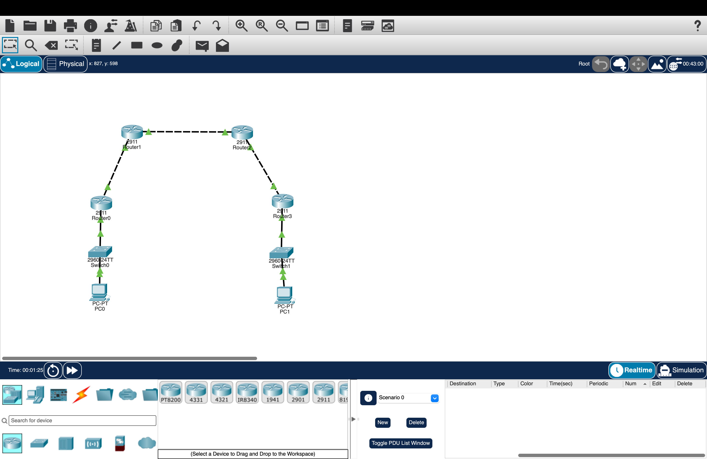
Fig. 1 — Module 4B — actual Packet Tracer topology: R1 (Area 1) — R2 — R3 (Area 0 backbone) — R4 (Area 2).
Role of each device:
- R1 — router-id 1.1.1.1, in Area 1 with LAN-A attached.
- R2 — router-id 2.2.2.2, ABR connecting Area 1 to the Area 0 backbone.
- R3 — router-id 3.3.3.3, ABR connecting the Area 0 backbone to Area 2.
- R4 — router-id 4.4.4.4, in Area 2 with LAN-D attached.
R2 and R3 both sit on the R2–R3 backbone link in Area 0. R1–R2 belongs to Area 1, and R3–R4 belongs to Area 2 — every non-backbone area touches Area 0 through its ABR.
Area flow: Area 1 (R1) → Area 0 backbone (R2–R3) → Area 2 (R4). R2 and R3 are the ABRs.
Devices & Addressing
Configuration
No OSPF configuration screenshots are available for this module — the router OSPF configuration below is shown as documented code, matching the pattern established in Module 2.
Verification Commands
Experiment Video
Module 4B — Experiment Walkthrough. Extending OSPF into Area 1, the Area 0 backbone and Area 2, and verifying inter-area connectivity.
Screenshots
Verification
PC0 IP Configuration
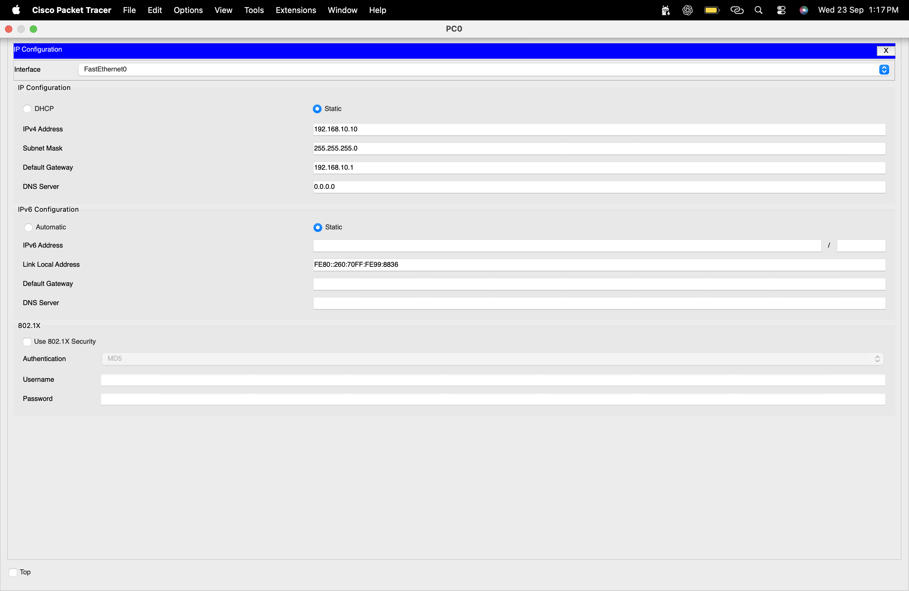
Confirms the LAN-A end device is addressed correctly and pointed at R1 as its gateway.
Connectivity Verification
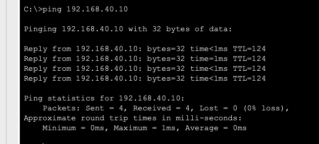
Documented check: a ping from a PC in Area 1 (LAN-A) to a PC in Area 2 (LAN-D), confirming the inter-area OSPF path is working end-to-end.
Packet Tracer File
module4b.pkt
Packet Tracer file for the Module 4B multi-area OSPF experiment.
Result
Module 4B extended OSPF into three areas — Area 1, the Area 0 backbone and Area 2 — using R2 and R3 as ABRs, with inter-area adjacencies and end-to-end reachability from LAN-A to LAN-D verified.
Module 5
WAN, NAT, EIGRP & BGP
Connect the campus edge to an external network over a PPP WAN link, routing internally with EIGRP, translating with NAT/PAT, and peering externally with BGP.
Overview
Module 5 takes the campus network to its WAN edge. The topology is PC0 — SW0 — R0 — R1 — R2 — R3 — PC1: R0 is the campus edge router, R1–R2–R3 form the internal WAN path, and PC1 sits on a remote network reached across it.
Serial links use PPP encapsulation, the internal WAN routers exchange routes with EIGRP, R0 performs NAT/PAT to translate the campus network to its WAN-facing address, and BGP is used to peer the campus AS with an external AS across the R1–R2 link. HDLC is covered as a configuration/learning objective for this module.
Objective
Bring up a PPP-encapsulated WAN link, route internally with EIGRP (AS 100), translate campus traffic with NAT/PAT on R0, and establish an external BGP peering between the campus AS and the ISP AS — verifying reachability from PC0 to PC1 end-to-end.
Concepts / Technologies
What is PPP?
Point-to-Point Protocol — a WAN serial encapsulation that supports authentication, compression and multilink, commonly used on point-to-point router links.
What is HDLC?
High-Level Data Link Control — Cisco’s default serial encapsulation. It is simpler than PPP but lacks PPP’s authentication and negotiation features. Covered here as a learning objective.
What is EIGRP?
Enhanced Interior Gateway Routing Protocol — an advanced distance-vector protocol that uses a composite metric (bandwidth, delay, and more) and converges faster than RIP.
What is NAT/PAT?
Network Address Translation / Port Address Translation — translates private internal addresses to a public/WAN-facing address, with PAT using port numbers so many internal hosts can share one external address.
What is BGP?
Border Gateway Protocol — the path-vector routing protocol used to exchange routes between separately administered networks (Autonomous Systems), such as a campus network and its ISP.
What is an Autonomous System (AS)?
A network or group of networks under a single administrative authority, identified by an AS number, used as the unit BGP peers with.
Topology
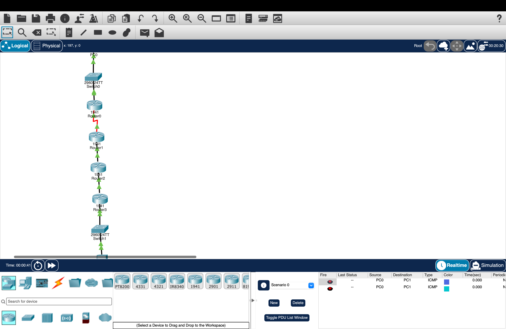
Fig. 1 — Module 5 — actual Packet Tracer topology: PC0 — SW0 — R0 — R1 — R2 — R3 — PC1.
Role of each device:
- PC0 — campus end device, on the R0-side LAN.
- R0 — campus edge router: connects the campus LAN, performs NAT/PAT, and starts the PPP WAN link.
- R1, R2, R3 — internal WAN path routers, routed with EIGRP; the R1–R2 link also carries the external BGP peering.
- PC1 — remote end device, on the R3-side LAN.
BGP peering is configured directly between R1 and R2 over the 10.10.30.0/30 link, as documented: R1 in AS 65002 and R2 in AS 65001 (the campus AS), with R2 advertising 192.168.10.0/24 into BGP.
Devices & Addressing
Device addressing
| Device | Interface | Address |
|---|---|---|
| R0 | G0/0 | 192.168.10.1/24 |
| R0 | S0/1/0 | 10.10.10.1/30 |
| R1 | S0/1/0 | 10.10.10.2/30 |
| R1 | G0/1 | 10.10.30.2/30 |
| R2 | G0/0 | 10.10.30.1/30 |
| R2 | G0/1 | 10.10.20.1/30 |
| R3 | G0/1 | 10.10.20.2/30 |
| R3 | G0/0 | 192.168.40.1/24 |
| PC0 | — | 192.168.10.10 (GW 192.168.10.1) |
| PC1 | — | 192.168.40.10 (GW 192.168.40.1) |
Configuration
EIGRP is configured under Autonomous System 100 using the actual internal networks configured in the experiment. Exact per-router network statements were not included in the supplied evidence, so they are not reproduced here to avoid inventing CLI that was not documented.
Verification Commands
Command Outputs — Documented
Module 5 has no verification screenshots — only the topology image and experiment video were captured. The outputs below are documented from the working experiment, not screenshots, and are labelled as such. No exact CLI values beyond what was documented are invented.
Experiment Video
Module 5 — Experiment Walkthrough. Bringing up the PPP WAN link, EIGRP, NAT/PAT on R0, and the external BGP peering between R1 and R2.
Screenshots
Packet Tracer File
module5.pkt
Packet Tracer file for the Module 5 WAN, NAT, EIGRP and BGP experiment.
Result
Module 5 was successfully configured and verified through the BGP stage: the PPP WAN link came up, EIGRP routed the internal WAN, NAT/PAT translated campus traffic on R0, and BGP peered the campus AS (65001) with the external AS (65002) with the campus network advertised. HDLC is documented as a configuration/learning objective for this module; no fabricated screenshots or command output are presented for it since no evidence was captured.